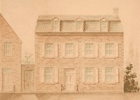

by
Stefan Bielinski
Lydia Fryer was born in October 1753. She was baptized at St. Peter's Anglican church where her parents, John and Hannah Van Zandt Fryer, were members.
This sloop captain's daughter grew up in Albany's first ward surrounded by her mother's family - the Van Zandts.
She married rising attorney Matthew Visscher in 1772. Over the next decade, their children were baptized at the Albany Dutch church where she was a member and pewholder. Over the next two decades, Matthew Visscher emerged as one of the visible leaders of the new city.
In November 1783, she was identified as an heir in the will filed by her father.
After living with her family on the Southside, by 1790 these Visschers had moved into their new home on Pearl Street in a style befitting a rising public official.
However, Lydia was on her own when Matthew Visscher died suddenly in August 1793. The young widow became head of their second ward home that became 100 North Pearl Street. This premier residential location would become known as a "street of widows!"
A few months later, a great fire destroyed a large chunk of the old city - coming precariously close to the new Visscher home. To make matters worse, the fire was blamed on Pomp - the servant of Matthew Visscher who had been out-of-control since the death of his master.
Although not yet forty-years-old, widow Lydia Visscher did not remarry. Taking control of her husband's estate, she would count on the support of her son, Sebastian (Bastian), who helped her sell off extra property. Living with other widows, servants helped her maintain the Pearl Street home for many years.
Lydia Fryer Visscher died in April 1841 at the age of eighty-eight. Her will passed probate in July.
notes
 Sources: The life of Lydia Fryer Visscher is
CAP biography number 2220. This profile is
derived chiefly from family and community-based
resources.
Sources: The life of Lydia Fryer Visscher is
CAP biography number 2220. This profile is
derived chiefly from family and community-based
resources.
Watercolor titled "Matthew Visscher House - 1830." Probably derived from a cityscape painting by James Eights. This image was copied from a forgotten/unknown/un-attributed Internet source – perhaps in the course of cyber-shopping! Copy in the CAP Graphics Archives. In 1788, only one home in the second ward was assessed higher than Matthew Visscher's new house. Widow Lydia Visscher probably lived at this 100 North Pearl Street address until her death - almost fifty years after her husband!
first posted 10/20/03